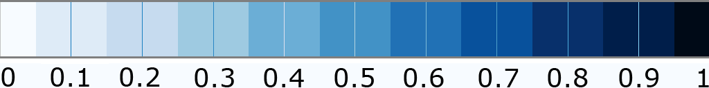

| \(f_{01} =\) | 1 | \(f_{11} =\) | 0 | |||
|
|
||||||
| \(f_{00} =\) | 0 | \(f_{10} =\) | 1 | |||
| Draw assymptotes | ||||||
|  | ||||||
Applet created by Johannes Kehrer for educational purpose.
Given the four values at the vertices of a cell (unit square), the value at each point \((\alpha, \beta)\) within the cell can be obtained by bilinear interpolation $$\begin{eqnarray} f(\alpha, \beta) &=& (1 - \alpha) (1 - \beta) f_{00} + \alpha (1 - \beta) f_{10} + (1 - \alpha) \beta f_{01} + \alpha \beta f_{11} \\ &=& A\alpha + B\beta + C\alpha\beta + D \end{eqnarray}$$ where \(A = f_{10}-f_{00},\, B = f_{01}-f_{00},\, C = f_{00}-f_{10}-f_{01}+f_{11}\) and \(D =f_{00}\). That is
Note that the isolines within the cell are hyperbolas. We can transform the previous equation into the equation of a hyperbola: $$f(\alpha, \beta) = \gamma (\alpha - \alpha_0) (\beta - \beta_0) + \delta$$ where \(\delta=(f_{00} f_{11} - f_{10} f_{01})/C\) is the function value at the intersection point \((\alpha_0, \beta_0)\) of the asymptotes with \(\alpha_0 = -B/C\) and \(\beta_0 = -A/C\), i.e.,
The asymptotic decider evaluates \(\delta\) to resolve ambiguous cases in Marching cubes.